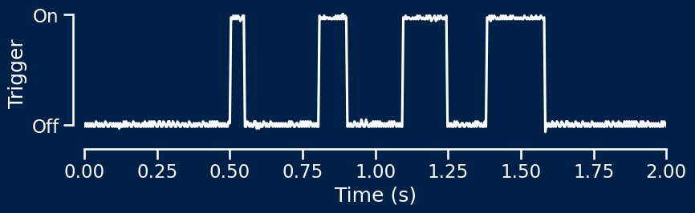
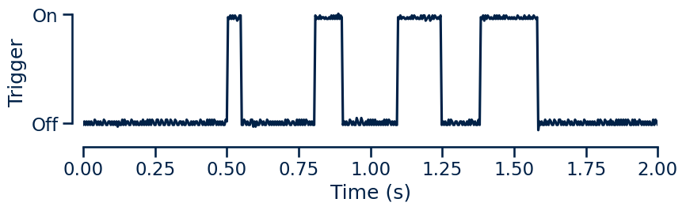
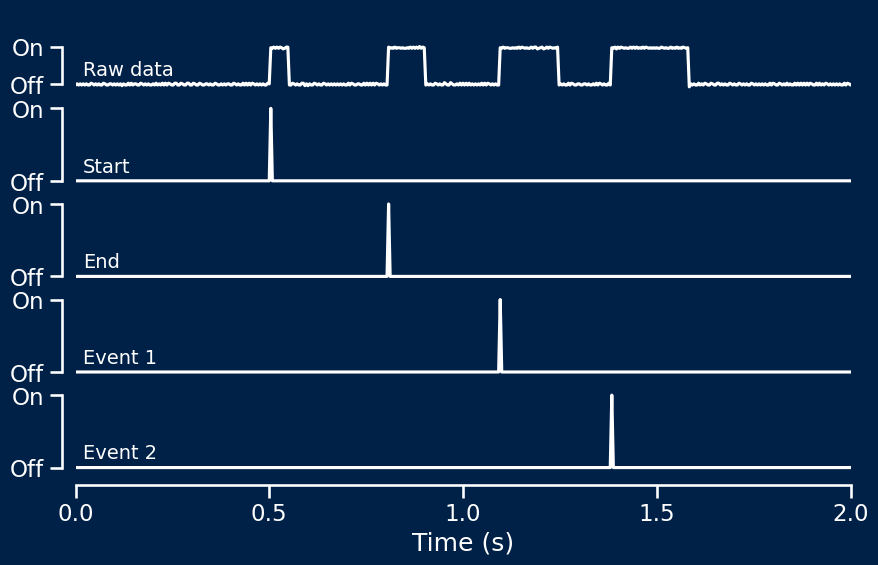
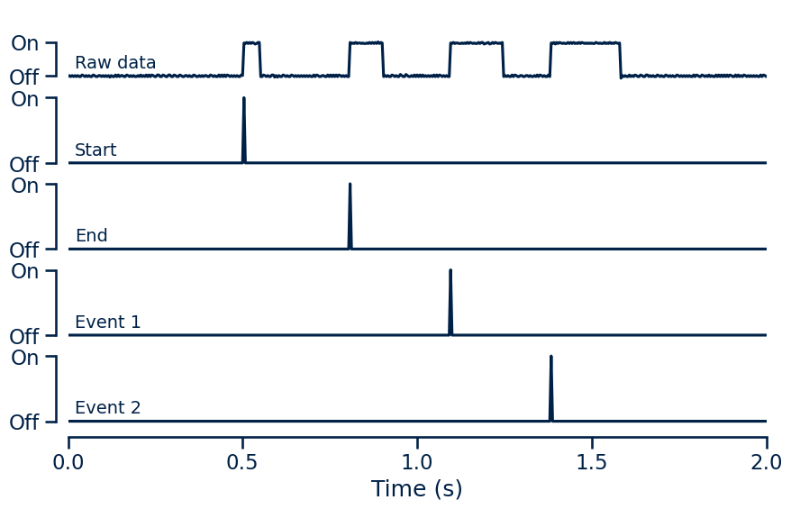

# Load example data - recorded signals using oscilloscope
data = np.loadtxt('./example_data/all_triggers.csv', delimiter=',', skiprows=2, usecols=[0,1])
samplerate = 250 # Hz
# Split data into time and voltage
t = data[:, 0]
v = data[:, 1]Analysis
Recovering event timings for synchronising data
After recording data, event signals are present as pulses of varying duration on a single channel.
However, in order to be able to analyse the recorded signals synchronised to the events, it is necessary to recover the exact timings of the onsets of each discrete event type.
Loading data
Data should be loaded as necessary following recording. The event synchronisation channel recording should be part of this data.
Here is a simple example loading oscilloscope data recorded from the output of the device while each event type is triggered in turn.
In this example, the sample data is recorded at 250Hz and saved as a CSV file with a two-line header and two columns. The first column is the time, the second is the recorded voltage, i.e. the event signal data.
This sample data is visualised below.


Recovering event timings
In order to synchronise the recorded signals to the behavioural events, we need to recover the exact timings of each discrete event type.
The package includes a function that allows us to determine exact event timings for each event type from the single-channel data of variable duration pulses.
getEvents
getEvents (data:numpy.ndarray, samplerate:int, eventIDs:list=None)
Recover discrete event timings from single-channel data
| Type | Default | Details | |
|---|---|---|---|
| data | ndarray | Single-channel data; 1 x t array | |
| samplerate | int | Recording sample rate (Hz) | |
| eventIDs | list | None | List of unique event IDs |
| Returns | ndarray | Event timings; n x t array |
The input data is provided as a one-dimensional numpy.ndarray. This corresponds to the recorded output signal at every timepoint.
The samplerate parameter is the sample rate of the recording system in Hz. This allows the expected duration of pulses in time to be linked to the expected number of samples in a given pulse.
The eventIDs parameter allows user-defined events to be recovered from the data. This is not necessary if using the simple, pre-defined events (start, end, event1 and event2). Using this option is described in further detail below.
# Recover event data
events = getEvents(v, samplerate)This function returns a two-dimensional numpy.ndarray. Each row corresponds to an event type in the order start, end, event1, event2. Each column corresponds to a single timepoint in the original recording.
The recovered event signals will be 0 everywhere except for at the timepoints where that event type occured, where they will be 1.
In this way, we recover the precise event onset times for each individual event type from the single-channel variable duration pulse data.
The event data can then be plotted to verify that we have recovered the exact event timings.
# Plot results
fig, ax = plt.subplots(5, 1, sharex='row', figsize=(10,6))
ax[0].plot(t, v)
ax[1].plot(t, events[0,:])
ax[2].plot(t, events[1,:])
ax[3].plot(t, events[2,:])
ax[4].plot(t, events[3,:])
# Plot results
fig, ax = plt.subplots(5, 1, sharex='row', figsize=(10,6))
ax[0].plot(t, v)
ax[1].plot(t, events[0,:])
ax[2].plot(t, events[1,:])
ax[3].plot(t, events[2,:])
ax[4].plot(t, events[3,:])
User-defined events
If using user-defined events, event timing can be recovered by passing a list of unique event IDs to the optional eventIDs parameter of getEvents().
# Define event IDs
END = 1
EVENT1 = 2
EVENT2 = 3
CONDITION1 = 4
CONDITION2 = 5
# Create list of event IDs
eventIDs = [END, EVENT1, EVENT2, CONDITION1, CONDITION2]The getEvents() function can then be used as before, now taking the event IDs as an input.
# Recover event data using user-defined event IDs
events = getEvents(v, samplerate, eventIDs=eventIDs)This function returns a two-dimensional numpy.ndarray. Each row corresponds to an event type. The order of events is defined by the ordering in the input eventIDs list, i.e. the ith row of the events array corresponds to occurences of the ith event in eventIDs list.
In this example, the events array will contain five rows in the order END, EVENT1, EVENT2, CONDITION1, CONDITION2.
Data analysis
This produces an array with 1 at the onset of each event type.
This allows for recorded signals to be easily extracted around these event signals, allowing windowing, averaging, etc.
By recovering and separating discrete event types, this allows for multiple different discrete event types to be encoded using a single input channel on the recording system.
This provides a straightforward system for performing synchronisation of recorded signals to complex behavioural tasks with arbitrary events.